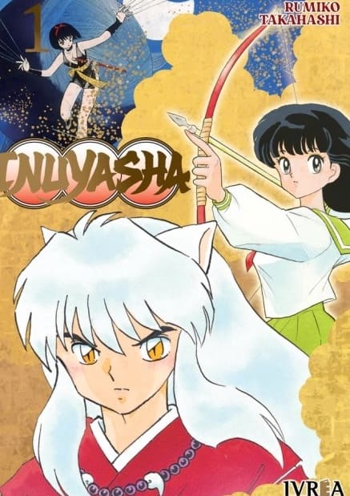

Inuyasha

En el antiguo Japón había un mezcla yokai (demonio) + perro + humano llamado Inuyasha, que buscaba
la mítica perla de Shikon para convertirse en un yokai completo. Hasta que la sacerdotisa Kikyo
lo ensarta contra un árbol de un flechazo y el tipo queda ahí durante añares.
Convenientemente, Kagome, una adolescente del Japón actual, por obra del destino viaja en el tiempo
y termina liberándolo para enfrentar un monstruo más jodido que él. Después de eso, la perla de Shikon
estalla en cientos de pedazos y la bella y el bestia tendrán que unir fuerzas a regañadientes si quieren
cumplir con sus objetivos.
¡El mundo han de cambiar para ir a un futuro ideal!